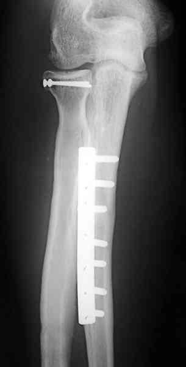

Bienvenue Sur Medical Education
Fractures : avant-bras
Spécialité : traumatologie /
Points importants
-
Elles s'étendent depuis la tubérosité bicipitale jusqu'à 2 travers de doigt au-dessus de l'interligne radio-carpien
-
Au-dessus, elles entrent dans le cadre des fractures du coude (tête et col du radius, olécrane) et au-dessous, dans les fractures du poignet et tout particulièrement les fractures de l'extrémité inférieure du radius
-
Dans certaines fractures à haute énergie où un écrasement des parties molles de l'avant-bras est à craindre, il faut se méfier d'un éventuel syndrome des loges qui peut conduire au syndrome de Volkman
-
Une prise de pression intramusculaire s'impose au moindre doute (douleur intense, pulsatile, loges musculaires tendues, troubles neurologiques sensitifs)
Présentation clinique / CIMU
-
Le diagnostic est souvent évident cliniquement et la radiographie confirmera le diagnostic
SIGNES FONCTIONNELS
-
Douleur
-
Prono-supination douloureuse
CONTEXTE
Présentation clinique / CIMU
- Le diagnostic est souvent évident cliniquement et la radiographie confirmera le diagnostic
SIGNES FONCTIONNELS
- Douleur
- Prono-supination douloureuse
CONTEXTE
Circonstances de survenue
- Traumatisme direct sur le segment moyen
- Traumatisme indirect par chute sur la main, bras en extension
EXAMEN CLINIQUE
- Il ne faut pas oublier d'examiner le coude et le poignet devant une fracture d'un seul os de l'avant-bras
Signes paracliniques
BIOLOGIQUES
-
Bilan pré-opératoire
-
A jeun.
IMAGERIE
-
Clichés orthogonaux de face et de profil et dans tous les cas des radiographies des articulations sus et sous-jacentes
Diagnostic étiologique
Diagnostic étiologique
On distingue
- Les fractures d'un seul os dites fractures isolées du radius ou du cubitus (ulna)
- Les fractures des 2 os de l'avant-bras
-
Les fractures d'un seul os avec luxation proximale ou distale de l'autre :
-
la fracture de Monteggia (qui associe une fracture du cubitus et une luxation de la tête radiale : en avant pour la fracture classique, en arrière pour la fracture de Monteggia inversée
- _493 Photo Fracture de Monteggia gauche : incidence de face
- _499 Photo Fracture de Monteggia gauche : incidence de profil
- _494 Photo Fracture de Monteggia inversée associée à une fracture de la tête radiale
-  _495 Photo Ostéosynthèse par plaque vissée sur le cubitus de la fracture de Monteggia
- _496 Photo Ostéosynthèse par plaque vissée sur le cubitus de la fracture de Monteggia
-
la fracture de Galeazzi qui associe une fracture du radius à une luxation radio-cubitale inférieure (ou radio-ulnaire distale)
- _497 Photo Fracture de Galeazzi gauche
- _498 Photo Ostéosynthèse par plaque vissée sur le radius de la fracture de Galeazzi précédente
-
la fracture de Monteggia (qui associe une fracture du cubitus et une luxation de la tête radiale : en avant pour la fracture classique, en arrière pour la fracture de Monteggia inversée
- Il s'agit habituellement de fractures transversales ou obliques courtes avec, assez souvent, un 3e fragment intermédiaire
Traitement
TRAITEMENT CHIRURGICAL
-
Toute fracture de l'avant-bras doit être opérée (par plaque vissée +++) pour éviter les cals vicieux qui retentissent toujours sur la prono-supination :
-
il est préférable d'opérer en urgence ces fractures
-
en cas d'indisponibilité du bloc opératoire, le traitement d'attente consiste à immobiliser par un plâtre brachio-palmaire à visée antalgique
- il est préférable d'opérer en urgence ces fractures
- en cas d'indisponibilité du bloc opératoire, le traitement d'attente consiste à immobiliser par un plâtre brachio-palmaire à visée antalgique
video BABP
TRAITEMENT ORTHOPEDIQUE
-
Le traitement orthopédique est exceptionnel chez l'adulte :
-
un traitement orthopédique peut être indiqué dans certaines fractures non déplacées ou peu déplacées du cubitus
-
un traitement orthopédique peut être indiqué dans certaines fractures non déplacées ou peu déplacées du cubitus
Surveillance
CRITERES D'ADMISSION
-
Traitement quasi systématiquement chirurgical
CRITERES DE SORTIE
-
Traitement orthopédique :
-
dans ces cas-là, la durée de consolidation est longue. Une durée d'immobilisation de 60 jours n'est pas rare
ORDONNANCE DE SORTIE
-
Antalgiques
-
± AINS
RECOMMANDATIONS DE SORTIE
Bibliographie
-
Traumatologie à l'usage de l'urgentiste. Sous la direction de Dominique Saragaglia. Editions Sauramps Médical. 2004
- dans ces cas-là, la durée de consolidation est longue. Une durée d'immobilisation de 60 jours n'est pas rare
Bibliographie
-
Traumatologie à l'usage de l'urgentiste. Sous la direction de Dominique Saragaglia. Editions Sauramps Médical. 2004
Auteur(s) : Jean-Jacques BANIHACHEMI, Dominique SARAGAGLIA